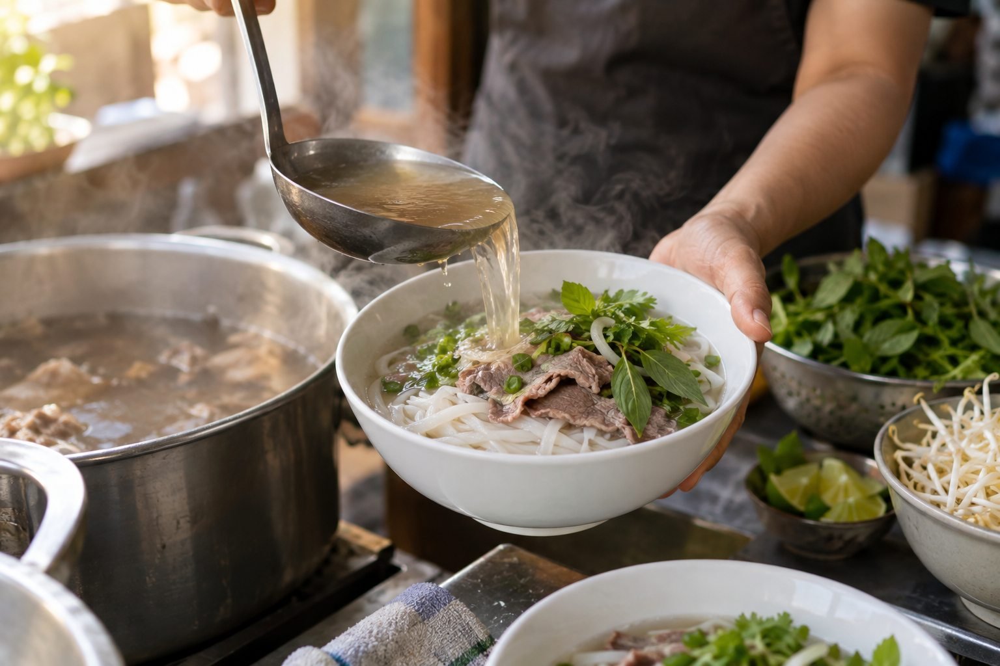
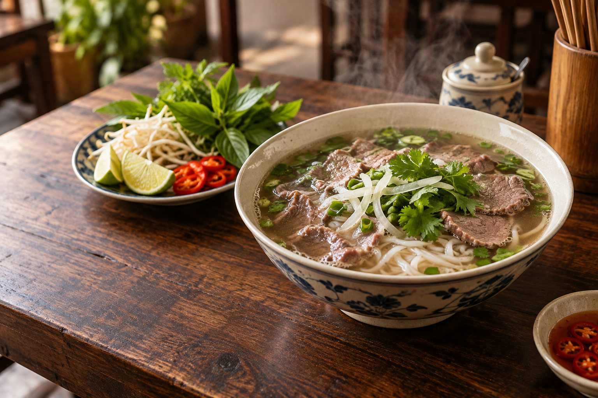

Nền vị
Nước dùng nóng là phần kết nối bánh phở và các nguyên liệu trong tô.
Câu chuyện của phở
Phở hiện diện trong nhịp sống hằng ngày: từ tiếng gọi món buổi sáng đến bữa ăn quây quần bên người thân. Sự gần gũi ấy khiến phở luôn có một chỗ riêng trong lòng nhiều người.
Từ gian bếp
Một nồi nước dùng nóng, những sợi bánh phở trắng mềm và phần nguyên liệu được chuẩn bị cẩn thận. Khi tất cả cùng vào tô, hương thơm tỏa lên báo hiệu một bữa ăn thật gần gũi.
Không có một cách thưởng thức duy nhất. Có người thích giữ nguyên vị nước dùng, có người thêm chút chanh hay ớt. Sự linh hoạt ấy cũng là nét thú vị của phở.

Trong một tô phở
Những nguyên liệu quen thuộc kết hợp với nhau để tạo nên một tổng thể hài hòa.
Nước dùng nóng là phần kết nối bánh phở và các nguyên liệu trong tô.
Bánh phở mang đến cảm giác mềm mại và giúp bữa ăn vừa đủ đầy.
Hành, rau thơm và nguyên liệu ăn kèm làm tô phở thêm sinh động.
Trên bàn ăn
Cùng một món phở, mỗi người lại có thể nhớ đến một khoảnh khắc khác nhau: buổi sáng cùng bạn bè, lần đầu tự nấu ở nhà hay bữa tối sau một ngày dài.
Website này mời bạn khám phá phở bằng những điều dễ cảm nhận nhất: mùi thơm, màu sắc, độ nóng và niềm vui khi cùng ăn.
Khám phá các loại phở